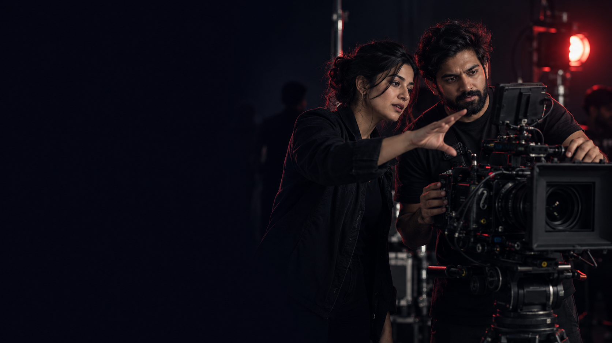

Footwear · Commercial
one8 Select
A formal-footwear TVC bringing movement, confidence and personality to the product story.
View case study
Video & Content Production
From the first idea to the final edit, we bring your story to life through commercials, product films and social content made for the screens your audience uses.
Discuss my filmBrand films · Product stories · Social content
Selected films
Explore three different approaches to bringing a brand to life, from a footwear commercial to product and quality stories.
Footwear · Commercial
A formal-footwear TVC bringing movement, confidence and personality to the product story.
View case studyFood & beverage · Brand film
An expert-led film translating product testing into a clear reason to trust the brand.
View case studyPersonal care · Product film
A product story connecting ingredients, nourishment and a distinctive visual identity.
View case studySelect a film to load the YouTube player.
What we create
A launch film, a product close-up or an always-on content series. We shape the format around your message, your audience and where they will watch.
Build the big moment
Give your brand a distinctive story, with a clear idea and a visual world people can recognise.
Make the product matter
Bring features, textures and everyday benefits into focus, making the product easier to understand and desire.
Keep the conversation going
Turn your brand story into platform-ready moments with a strong opening and a reason to keep watching.
Bring it all together
Shape the final story through rhythm, sound and finish, with versions planned for the channels you need.
Every brief is different. Formats, film lengths and deliverables are agreed around your goals and production scope.
How we work
A clear production plan keeps the creative ambition and the practical details moving together, with agreed checkpoints along the way.
Find the story
Align on your audience, message, channels and budget. Then develop the concept, script and visual direction.
Your checkpointAgree the creative direction and scope.
Plan the details
Bring the storyboard, casting, locations and shot list together. Plan the schedule and required formats before the shoot.
Your checkpointApprove the production plan.
Bring it to life
Capture the performances and product moments, then build the story in the edit with sound and graphics.
Your checkpointReview the first cut and share consolidated feedback.
Finish for the screen
Refine the agreed edit, complete colour and sound, and prepare the approved versions for your chosen channels.
Your checkpointSign off the final films and delivery files.
Timelines, review rounds and delivery formats are agreed before production begins.
Why Madverse
Your film should feel like your brand, not just look good. We connect the thinking behind the message with the craft that brings it to the screen.
The collective advantage
Strategy, creative and production come together around your brief. The team is shaped around the story you need to tell, with specialist input where it adds value.
Meet Mad Men ProductionsFrequently asked questions
A few practical answers to help you plan your film. The final scope, schedule and deliverables are confirmed around your brief.
Share your objective, audience, key message, intended channels, launch date and an indicative budget. Brand guidelines, product details and reference films are helpful too. You do not need a finished script to start the conversation.
Yes. Concept development, scripting and storyboarding can be included in the brief, alongside production and post-production. If you already have an approved idea, we can discuss what is needed to bring it to life.
The budget depends on the concept, shoot requirements, talent, locations, post-production and number of final versions. Share your budget range early so the proposed approach and deliverables can be shaped around it.
Timing varies with the complexity of the film, preparation, shoot logistics and approval stages. We agree a schedule after reviewing the brief. If you have a fixed launch date, tell us upfront so feasibility can be checked before committing.
Yes, when those requirements are planned into the production. Flag the cutdowns, vertical edits, product shots and channel versions you need before the shoot so framing, coverage and time can be allocated accordingly.
Review stages and included revision rounds are agreed in the scope. Consolidated feedback at each checkpoint helps keep the edit moving. Changes to an approved concept or additional versions may need a revised budget or schedule.
The delivery list is agreed before production and can include the master film, cutdowns, channel-specific aspect ratios and subtitled versions. Raw footage, editable project files and additional language versions should be discussed separately rather than assumed to be included.
Music, talent and other third-party usage requirements are scoped around the intended channels, territories and campaign duration. Confirm these needs in the brief so the relevant permissions and costs can be accounted for.
Have a question about your film? Start a conversation
A brand story to tell,
a product to launch or
a film worth bringing to life?